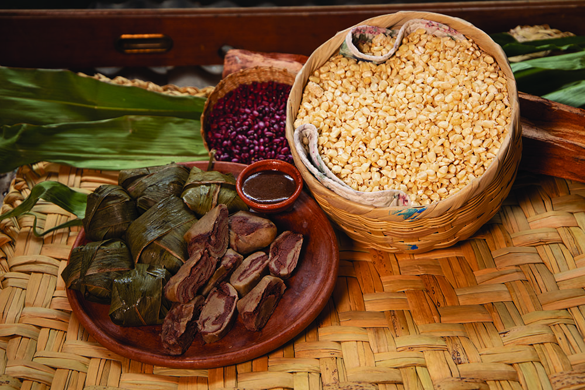

La gastronomía de Jalapa, Guatemala, es rica y variada, con una mezcla de sabores y tradiciones que reflejan la diversidad cultural de la región. Aquí tienes algunos de los platillos típicos más destacados: Fiambre guatemalteco: Un plato tradicional que se prepara especialmente para el Día de los Difuntos. Es una ensalada fría que incluye una variedad de carnes, embutidos, vegetales y encurtidos. Tamales: Hay diferentes tipos de tamales en Jalapa, como los tamales de chipilín y los tamales de elote, que se preparan con maíz tierno. Tayuyos: Tortillas rellenas de frijoles y otros ingredientes, que se cocinan a la parrilla. Pescado frito con ensalada: Un plato sencillo pero delicioso, que se sirve con una ensalada fresca. Caldo de marisco: Una sopa rica y sabrosa hecha con mariscos frescos.
Como se muestra en la imagen, es un tayuyo el cual es una tortilla rellena de frijoles y otros ingredientes sabrosos. Los tayuyos son un platillo típico de Guatemala, especialmente popular en las regiones del oriente del país.
Volver